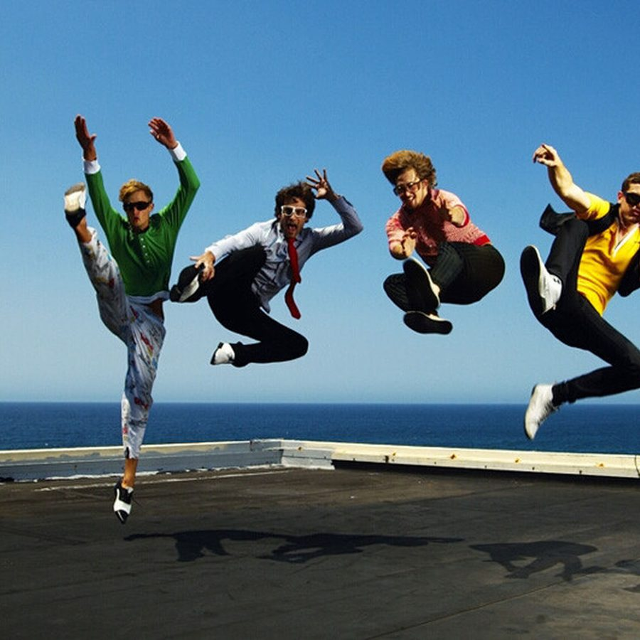

Van She: Vemixed to perfection


Nick Routledge is exuding anxiety when I corner him for ITM’s interview. With less than a week before he and his band Van She head out on a national tour, they’re yet to lock down their new and improved live set and the nerves are starting to show. “It’s getting pretty hectic,” Nick admits on a rare excursion outside of the studio. The frontman explains that he and Van She have been working “almost non-stop” on their new live show, with a sneak peak in store this Saturday night with a DJ set at the Save FBi All-Nighter show at The Forum in Sydney, before premiering properly next week at Melbourne’s Prince Bandroom and winding its way across the country from there.
The need for a shiny new live set comes from the release of Ze Vemixes, a new package that unites Van She the band with its club and remix side project Van She Tech, for a remixed (or Vemixed in this case) take on Van She’s debut LP, V. Having amassed a healthy reputation for Van She Tech with their formidable remixes for the likes of Klaxons, Empire of the Sun, Tiga and Utah Saints, you’d think that the pairing of the two acts would be a natural next step, but as Nick explains, a whole disc of remixes was never on the cards until recently. “A lot of people think it’s weird, but we hadn’t really thought of doing a whole package of Van She Tech remixes of V. We liked the way the album turned out and were happy to let it stand on its own,” he says. “But then we got a call from our label, Modular, who wanted us to remix V, which makes a lot of sense for them as a label,” he laughs. “We thought it could be a fun thing to do, so we said yes, but they also wanted us to do it in six weeks, which has made the last few months really crazy.”
Since that fateful luncheon with the Modular bosses, Van She have had to squeeze remixing V in between their own shows, demoing songs for their second album, and supporting The Presets on the duo’s run of arena dates across the country. So obviously, you can understand the pressure on the band. “It’s not exactly an ideal situation for us to have been in, but somehow we always manage to make it through,” Nick laughs. “We always get there in the end, so I know we’ll have everything ready by the time we go live.”
Nick stresses that the Van She live show that fans will experience on the upcoming Vemixes tour will be a completely new and fresh one. “It was really important for us to do something a bit different with these shows. We’ve been playing live for years now and I think pretty much everyone in Australia has seen that show, so it was time to do something new,” he laughs wildly. “We’ve shaken the whole thing up for this tour, so onstage now will just be drums, bass guitar and like five or six synthesizers. It’s completely changed.”
Nick reveals that the new and improved live show is a throwback to Van She’s original setup, which was devoid of the band’s now signature guitar-infused pop sound. “We started off with things being really electronic,” he reveals. “It was only after about ten shows that we decided to add guitars to the mix, so we’re pretty happy to bring that electronic vibe back to the show,” Nick grins. “I have a really deep love for techno and dance music. Me and Michael were making house music together years before we did Van She, and it’s just got this great feeling to it,” he enthuses. “Like, all the dance and club people that I know just care about making good music and having a fun time, there’s not (too much) ego involved. I find that on the other end of the spectrum, bands focus a lot on image and emotions,” he says before a contemplative pause. “Well, I guess I do like being in a band too. I always want the best of both worlds.”
As the band embarks on the road, they’re taking advantage of the national tour to help cultivate local talent by bringing along some young guns of the Australian indie/electro scene, including former Damn Arms synth-wizard G.L.O.V.E.S, Bag Raiders, Knightlife and Kitsune-approved electro poppers Ted & Francis. “Over the past few years, the scene here us grown by leaps and bounds, and it’s so strong now,” Nick gushes with the enthusiasm of a proud parent. “Everyday I’m hearing amazing stuff from all these new kids and it feels great. Look at someone like Knightlife, he’s doing so much cool stuff, I have to read the manuals to new equipment just to keep up with him,” he beams.
“I think we saw how big our little scene had gotten when we went on the road with the Presets,” Nick says. “They’ve just exploded over the last year, and they totally deserve it. We’ve been friends with those guys for years now, and it makes you feel really good inside to see your friends succeed like that,” he explains.
Nick expresses that working alongside The Presets has taught the band the importance of good timing. “I don’t mean timing in terms of being able to keep rhythm – although that is pretty much essential when you’re producing dance music,” Nick laughs before saying, “I mean that it’s important to strike at the right time and make an impact. We’re not going to wait around for ages before making another record. We’re already thinking about it and we want to get it out early next year, hopefully. Having done Ze Vemixes already, I think that Van She and Van She Tech are moving closer together, so the next record will be like a merger of the two in a way,” he says before laughing, “there’ll be more techno.”
Van She Ze Vemixes tour, presented by inthemix:
Fri Jun 19 – The Prince, Melbourne – w/ Ajax, Knightlife, Ted & Francis and G.L.O.V.E.S.
Fri Jun 26 – The Metro, Sydney – w/ Bag Raiders, Ted & Francis and Dangerous Dan
Fri Jul 3 – Fowlers Live, Adelaide – w/ The Touch & guests
Sat Jul 4 – The Capitol, Perth – w/ guests
Fri Jul 10 – The Hifi, Brisbane – w/ guests
If you’ve like a sneak peek of what Van She have got coming up, check out their DJ set at ‘Do The Dance: The Save FBi All-Nighter’ at the Forum in Sydney this Saturday might, in aid of the much-loved community station FBi Radio!